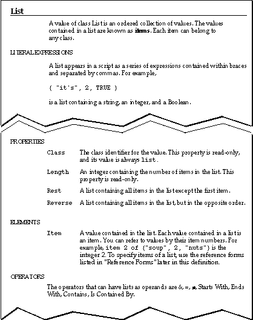
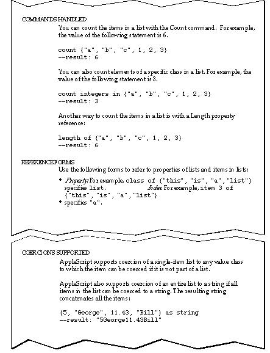

Using Value Class Definitions
Value class definitions contain information about values that belong to a particular class. All value classes fall into one of two categories: simple values, such as integers and real numbers, which do not contain other values, or composite values, such as lists and records, which do. Value class definitions for composite values contain more types of information than definitions for simple values.Figure 3-1 shows the definition for the List value class, a composite value. The figure shows seven types of information: examples, properties, elements, operators, commands handled, reference forms, and coercions supported. The sections following the figure explain each type of information. Some definitions end with notes (not shown in Figure 3-1) that provide additional information.
Figure 3-1 Value class definition for lists

Figure 3-2 Value class definition for lists

Subtopics
- Literal Expressions
- Properties
- Elements
- Operators
- Commands Handled
- Reference Forms
- Coercions Supported